J1

E0 He looked up that character in the dictionary.
This paper introduces an attempt at collecting a corpus of various usages of Japanese predicates and synonymous expressions in English. We have learned that an effective consideration to exhaustively collect such various usages is to continue to create new sentences until no more sentences can be conceived within one language. We have found that an effective way of collecting synonymous expressions of predicates in Japanese-English or English-Japanese translation, is to create translations of the synonymous expressions and expand them to example sets of multiple pairs.
An example of the corpus is given below:
| J0 | Kare-no | kikaku-ga | atatta. | ||
| his | plan | hit | |||
| "his plan was a success" | |||||
| J1 | Kare-no | kikaku-ga | sêkô-shita. | ||
| his | plan | succeeded | |||
| "his plan succeeded" | |||||
| E0 | His plan was a success. | ||||
| E1 | His plan succeded. | ||||
| E2 | His plan was successful. | ||||
Here, the two Japanese sentences and three English sentences have basically the same meaning, and give rise to a bilingual corpus of six pairs (J0-E0, J0-E1, J0-E2, J1-E0, J1-E1, J1-E2). The sentences can also be used as examples of mono-lingual paraphrases.
Sentence creation becomes problematic when sentences that are collected are arbitrary. However, we can reduce the possibility of collecting only arbitrary sentences by writing down all of the sentences that one can think of, or by having multiple checkers mutually perform a check. In other words, we can have the same objectivity as elicitation experiments carried out in linguistics.
We have created example sets of multiple pairs (28,000 Japanese sentences and 27,000 English sentences) for 6,000 Japanese predicates. At present, we are working to expand the sets in order to cover the main predicates of the Japanese language.
Lexical resources already exist where basic Japanese-English predicate frames are paired together. For Japanese and English, 14,000 Japanese-English basic patterns are given in "Goi-Taikei: A Japanese Lexicon" (Ikehara, et al., 1997). Here, the term "pattern" describes a verb, adjective, or noun-copula, along with its arguments (mainly noun-postposition combinations). Even so, problems still remain that need to be addressed, such as the coverage of the types of expressions and the restrictions on the use of each expression, the diversity in the types of expressions able to express the same meanings, and the description of the pattern constraints (Shirai, et al., 1998).
The coverage problem is caused by characteristic differences between dictionaries designed for human use and dictionaries designed for machine use. A somewhat limited Japanese-English dictionary uses words and usages having above-average usage frequencies. This is a common design measure for a human use dictionary. However, such a dictionary perhaps intentionally excludes words and usages of comparatively lower usage frequencies. When humans use the dictionary, they obtain words and usages suitable for their purposes by performing trial and error, i.e., they change and reword what they want to say using different expressions until the target words or usages are suitable. It is very difficult to achieve the same kind of mechanism in computer processing, and accordingly, attempts have been made to comprehensively record the words and usages for machine-targeted dictionaries. Examinations are continuing in order to improve the coverage of basic patterns by the collection and abstraction of examples (Shirai, 1999).
The problem of diversity lies in the uniformity of translations: the same expression will always be translated in the same way. This is both an advantage and disadvantage of machine translation. Another cause is that the correspondences of Japanese-English basic patterns are normally limited to one-to-one correspondences. This may be a result of trying to produce initial results quickly. The uniformity of translations can be a disadvantage because of the monotomy of the translated sentences. When machine translation is used as a tool, one of the post-editing processes is to diversify expressions using a thesaurus. The influence of doing so is great when substituting verbs in many cases while the influence is significantly less when substituting nouns. We believe that it would be very useful if there were a thesaurus for patterns (like thesauri of regular words) and if it also corresponded with the sentence pattern substitution in machine translation.
A proposal has been made to separate the Japanese parts and the English parts, resulting in two monolingual lexicons with a smaller linking lexicon (Baldwin, et al., 1999). In this case, the selectional restrictions on the source language would cease to be influenced by the target language equivalent, making for more natural monolingual dictionaries. This architecture makes it far easier to add more potential translations, as each new pair would just be a link, rather than a full pair of Japanese and English patterns.
The cause of the condition description problem is assumed to be that the original valency dictionary was designed for analysis purposes, and the description of the conditions was done by hand. The former, for example, abstracts a noun based on a semantic system such that "Musume-ga mago-wo umu [The daughter has given birth to a grandchild]" becomes < person > has given birth to < person >", and "Inu-ga koinu-wo umu [The dog has given birth to a puppy]" becomes "< animal > has given birth to < animal >". Then, if we integrate both, we get "< person or animal > gives birth to < person or animal >". Obviously, the mutual relationship between a noun of the ga case and its corresponding noun of the wo case is lost. Although there are very few problems in the acceptance of linguistic expressions with the "typical" (assuming correct sentences) analysis processing, unsuitable combinations are produced in the language generation besides the emergence of detection problems when an attempt at use is made in the detection of errors. The latter can also experience distortions in the abstraction process. Concerning the latter, an attempt was made at averaging by support processing (Akiba, et al., 2000).
In terms of preparing a valency dictionary as a basic dictionary of Japanese language analysis and Japanese-English translation, importance had been placed on coverage until now. At present, we believe that the utilization of human soul-searching is effective, where analysts try to invent as many possible paraphrases as they can. This is necessary because it is not easy to obtain a large-enough corpus to obtain low-frequency words and information related to their usages. In other words, at present, such utilization seems to be an appropriate step for accumulating data since there is only fragmentary information on the diversity of expressions. Accordingly, focusing on sentences for Japanese-English translation collected as a part of improving the coverage of Japanese-English basic patterns (Shirai, 1999), we found that sufficient results are possible by assuming constrained semantic correspondences between Japanese and English sentences and attempting to collect sentences spoken in other ways for Japanese sentences. The same results were also obtained for English sentences. Below, we explain an outline of the collection method and the trial and error we used to refine this method. Then, we continue on the collection methods of the paraphrased sentences.
In the past, we aimed at improving the coverage of the valency dictionary and used example sentences by soul-searching. In the soul-searching, we often considered the possibility that the arbitrariness of the created example sentences would become problematic. However, we also believed that this arbitrariness problem would not easily occur, since our problem setting was where usages were enumerated and not where a small number of example sentences matching specific scenes were created. There was the occasional problem concerning whether or not it was possible to call a generated example sentence a natural expression. For this problem, the same person reconsidered the problematic sentence after a certain amount of time had elapsed or exhaustively carried out the work with others through mutual checking.
Below, we first show the method when carrying out implementation aiming at improving the coverage, and then show the current method aiming at improving the diversity.
First, we covered various usages by soul-searching in the form of example sentences and decided to consider them in two steps to abstract the example sentences. This was because our final aim was to improve the coverage of the valency dictionary despite the fact that it is not easy to collect abstracted sentence patterns. As a criterion of selecting a terminology for the creation of an example sentence, we separately judged whether the terminology was suitable as terminology of the modern language. Here, we chose only one dictionary and created a policy that it be used as a rough standard. At times, it was problematic to judge whether or not a generated example sentence was a natural expression. Concerning this point, the same person reconsidered the problematic sentence after a certain amount of time had elapsed or exhaustively carried out the work with others through mutual checking. We set the following conditions based on our work experiences.1
The most direct motive here is to get more than one English translation for one Japanese expression. This can also be called the paraphrasing of English expressions. However, this does not necessarily mean that several English expressions absolutely must be generated from a specific Japanese expression. Considering this, we decided to implement Japanese paraphrasing and English paraphrasing in parallel.
The concept of collecting paraphrased cases should perhaps include the collecting of synonymous expressions within the same language from some viewpoint. However, there are many cases in which other expressions cannot be easily thought of after example sentences are shown and people become dazzled by them. It is also difficult to enumerate types of viewpoints beforehand. Accordingly, here we presuppose the existence of Japanese-English translation pairs, and while we use these Japanese-English sentence pairs under constraints, that is, as we make various translation example sentences, we also collect paraphrased cases.
The paraphrasing we mention here (for example, in the case of an English sentence) is something that imitates the generation of a synonymous expression in Japanese and a re-extraction from a Japanese-English dictionary, when the system comes across a word or expression that is not in the Japanese-English dictionary. Accordingly, it is possible that a single language speaker who is not familiar with the target translation language can also help in the work. As a real problem, however, there is the fear that the synonymous agreement gradually becomes broader, i.e. the difference in the meaning expands, when different expressions that are thought of one after another are not recorded in the Japanese-English dictionary. In fact, in our current attempt, such trials were present, and the people responsible for the comprehensive example collection had to make special requests to the translators responsible for the example sentences. Our experiences have shown that it is not easy to judge subtle Japanese-English correspondences when securing coverage. In the future, we hope to improve the following condition settings based on an analysis of the current problems.
Based on the idea of valence by Ishiwata (Ishiwata & Ogino, 1983), we began to construct a semantic valency dictionary as the base of a valency dictionary by abstracting example sentences of a somewhat limited Japanese-English dictionary. In the early version, we collected 10,000 general sentence patterns and 3,000 idiomatic sentence patterns. However, we immediately found that the frequent lack of sentence patterns was problematic in experimental evaluations. Therefore, we searched for a way of covering sentence patterns automatically. Realistically, it is not easy to obtain a sufficiently large corpus in collecting low frequency usages. Accordingly, we decided to collect various usages as example sentences by "soul-searching".
| num. of words | created sent. | paraphrase | w/o paraphrase | work order and work contents | |||
| Jpn | Eng | Jpn | Eng | ||||
| Japanese verb/IPAL | 849 | 16,713 | 7,043 | 4,096 | 12,020 | 13,748 | 0(IPAL), 1(add), 3(modify), 8(paraphrase) |
| Japanese verb/others | 936 | 1,883 | 0 | 0 | -- | -- | 7(collect) |
| compound Japanese verb | 2,101 | 3,701 | 1,212 | 480 | 2,487 | 3,220 | 4(collect), 9(paraphrase) |
| -i type adjective/IPAL | 136 | 2,156 | 530 | 219 | 1,626 | 1,937 | 0(IPAL), 2(add), 6(modify), 11(paraphrase) |
| -i type adjective/others | 522 | 830 | 1,561 | 1,584 | 1 | 0 | 12(collect & paraphrase) |
| -na type adjective | 1,296 | 2,356 | 621 | 440 | 1,735 | 1,915 | 5(collect), 10(paraphrase) |
| verbs of Chinese origin (in progress) | (799) | (1,419) | (4,001) | (4,002) | (5) | (1) | 13(collect & paraphrase) |
| Total | 5,840 | 27,639 | 10,967 | 6,819 | 17,869 | 20,820 | Note: Not including verbs of Chinese origin. |
We focused our attention on the IPAL dictionary (Technical Center of IPA, 1987; 1990) in which various usages for individual predicates are recorded as example sentences. We added usages of different-nuance predicates as example sentences. Next, we decided to raise the coverage of the predicates based on a Japanese dictionary, and sought standards for the selection of these words in a modern example dictionary (Hayashi, 1985). We are now continuing with the creation of example sentences targeting predicates (i.e. not recorded in the IPAL dictionary), and are working on verbs of Chinese origin. We are also doing paraphrasing work, which was started midway through our research.
Table 1 shows the collected data as of June 2001. "Japanese verb/IPAL" deals with words among the Japanese verbs recorded in the IPAL dictionary, and "Japanese verb/others" deals with all others. The order of the work and contents of the work are shown in the comments section. Each item is equal to an amount of work of one to three years. Some of the parts were implemented in parallel. Paraphrasing verbs of Chinese origin was easier in comparison with the others because of the more specific meanings. Example sentences are shown in Appendices A-E.
In this section, we explain the work history and problems in our creation of example sentences based on the impressions of the people carrying out the work.
This work was started with the aim of covering the usages of predicates. At the start, we found a lot of words to be deeply familiar in "Japanese verb/IPAL" and "-i type adjective", and we understood that colorful example sentences, i.e., 10 or more example sentences (on average) per predicate, could be created if we excluded rare exceptions. Initially, there was a delay since we had to confirm the IPA dictionary set (due to the amount of example sentences) and its usage overlaps with the created example sentences. In particular, we needed time to confirm that the IPAL adjective dictionary was thoroughly classified in terms of the meanings of words in comparison with the IPAL verb dictionary, and that the recorded example sentences dealt with detailed differences in nuance. Because of this, we could improve the degree of allowing example sentences of similar usages to overlap.
There were a lot of words with restricted usages under "compound Japanese verb" and "-na type adjective", and we therefore decided to stop at two (or even one) example sentences per predicate. On the flip side, the necessity arose to add background explanations for better conciseness, since the expressions became unnatural when we attempted to gather the reduced usages. Obviously, when an analyst feels unnaturalness, it is typical for his/her degree of sharpness to be diminished when carrying out repetitive reading, and for the resulting judgment to gradually become more difficult. In consideration of this, everyone worked to eliminate unnaturalness by carrying out mutual checking, and rechecking after intervals.
Opinions were sometimes divided on whether or not a word (before usage under "Japanese verb/other") was a modern word. For such words, we contrasted ways of speaking (something) using similar words and judged the validity by mutual checking, and we also made efforts to create example sentences within the possible ranges. In spite of this, however, we allowed exclusions due to judgments made by the people carrying out the work, since there were cases where they were not confident in the results.
We warmed to the basic idea of creating paraphrased example sentences even while performing the above work to create example sentences. However, this resulted in example sentences of "Japanese verb/others" and the work efficiency appeared higher on the side working to keep pace with comparisons to similar expressions. In addition, because we did not have concrete condition settings in terms of what standards should be used to implement the paraphrasing (which are not easy to determine), we had to assume for the time being each of the Japanese-English translation pairs to be the target of translation and then had to establish basic measures to create expressions suitable for the translation.
Under these conditions, we tested paraphrasing for "Japanese verb/IPAL" (where the example sentence creation was comparatively easier) and "Compound Japanese verb" (where the example sentence creation was comparatively more difficult). Then, we assumed the situation where Japanese natives consulted a Japanese-English dictionary once more for the Japanese-English translations and dealt with the creation of synonymous expressions close to the predicates. In this step, strict synonymy was made a requirement. This work resulted in the creation of paraphrased sentences for 1/2 to 1/3 of the target sentences.
When we identically tested the paraphrasing with "-na type adjective" and "-i type adjective/IPAL", we found that the work became more difficult as only about 1/4 could be paraphrased. The cause of this might have been the lack of a sufficient analysis, but one of the more plausible causes of this was the difficulty in paraphrasing only nearby predicates. For the Japanese "kare-wa jôzu ni oyogu.", "He is a good swimmer." might be more appropriate than "He swims well.", but the former translation is almost never created since considerations center on the true translation for an original sentence in Japanese to English translation. Accordingly, we decided on an expanded interpretation of the basic measures targeting Japanese-English translation pairs, preferably to create paraphrased example sentences with the intent of creating translated sentences.
With "-i type adjective/others", we created Japanese example sentences, gave multiple English translations to them, and by looking at the results, created more (other) Japanese example sentences. In this work, we created paraphrased example sentences of about two-fold the number of example sentences for basic translations. At present, we are proceeding with the creation of example sentences of "verbs of Chinese origin" under the same conditions as those of "-i type adjective/others", and are seeing about the same example sentence results as those of " -i type adjective/others".
The measures for the creation of example sentences are as explained in section 2.1, but are set as a result of trial and error as explained in the previous section. We consider the following problems to be complex. In particular, the step to collect paraphrased example sentences have finally reached constant settings and there is now the need to examine validity. We also believe that it might be appropriate to re-examine the way of thinking itself concerning valence based on recent research results (Ishiwata, 1999).
(1) Degree of advancement of work
There continues to be dissatisfaction in the created quantity and variety of the initial work stage (the people doing the work have been expressing strong dissatisfaction). Although reconsiderations were made in the work targeting the verbs and adjectives of the IPAL set, we now feel that reconsiderations should also be made about other example sentences. Moreover, although paraphrased example sentences were created, reconsiderations should also be made about other example sentences. Such a necessity may be particularly high if we consider that trial and error is the final step in the creation of paraphrased example sentences. In addition, the quality of example sentences themselves appears improvable by re-inspection.
(2) Verbs or adjectives
There are few adverbial usages for verbs (e.g., tsuide (after that)), and often there is semantically no difference in usages of adnominal forms and usages of end forms. In contrast, not only are there many adverbial usages, but there are also many attributive usages and a variety of ungrammatical relationships for adjectives. It also appears at times that end form usages are non-existent, but there are actually many of them. When it seems there are no end form usages, there is often confusion in judging where to stop the creation of example sentences. This is caused by the difficulty of objectively showing what is actually not general.
(3) General or idiomatic
At first, we placed emphasis on the collection of general sentence patterns but also allowed idiomatic sentence patterns. This is because we thought that it was not easy to collect idiomatic patterns comprehensively. However, there were many cases where it was difficult to perform clear separation between idiomatic sentence patterns and general sentence patterns. In other words, there was the possibility of performing literal interpretations among idiomatic sentence patterns, and vice versa. It would be preferable to make it necessary to additionally cover idiomatic patterns beforehand from the viewpoint of paraphrasing.
(4) Equivocally or individually
With ambiguous predicates, the example sentence creation count became large, and it was not easy to examine the coverage of usages while surveying the example sentences as a whole. The work efficiency deteriorated when it was assumed necessary to judge whether or not background explanations should be added on a case-by-case basis. In such extreme cases, it was necessary to carry out some work support.2
(5) Degree of paraphrasing
At first, we mainly proceeded with the paraphrasing of predicate parts from the viewpoint of extending the valency dictionary. However, we soon realized the occasional formation of various expressions when rewording sets of case elements and predicates as units, and gradually relaxing conditions. We may possibly ignore them for the agreements of only guaranteed correspondences of translated sentences, which is a major premise.3 Or, another effective approach might be to attempt a re-examination of the paraphrasing results by having the Japanese-English checkers carry out mutual exchanges.
In the future, we would like to deal with the following as sets too. It is important to start an examination from the extraction method for these, since picking out each target word from the information of a Japanese dictionary is difficult in itself.
(a) When there is an English expression that is not a word-for-word translation.
| e.g. | Kare-wa | taru-no | kuchi-wo | aketa. | |||
| he-TOPIC | barrel-of | mouth-OBJECT | opened | ||||
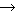 He tapped the barrel. | |||||||
(b) When a predicate noun of a Japanese sentence is not translated into an English noun.
| e.g. | Kyô-wa | hare-da. | |
| today-TOPIC | fine_weather-COPULA | ||
| It is fine today. | |||
(c) When the expression is a conversation type casual expression.
| e.g. | Tohoho-na | kêkaku. | |
| helpless(colloquial) | plan | ||
| Helpless/pitiful plan. | |||
We introduced the present situation and problems concerning example sentence sets of Japanese predicates. Concretely speaking, we reported that soul searching is effective, like elicitation experiments, when comprehensively collecting example sentences corresponding to various usages. We also showed that creating various translations is an effective method in the domain of Japanese-English translation and in the domain of English-Japanese translation, for the creation of paraphrased example sentences.
Using the guidelines proposed in this paper, we have created 28,000 Japanese sentences and 27,000 English sentences for 6,000 Japanese predicates. We are still producing more examples, and are also planning to go back and make more examples for the predicates we covered first, using the experience we now have.
Because the method proposed in this paper continues to evolve, involving an accumulation of experiences, there are a few remaining problems that should be considered for the example sentences created initially. In addition, because we have not collected many cases of nouns becoming predicates, and so on, we hope to cover cases of them working as attributes and correspondences towards utility (Takezawa, Shirai & Ooyama, 2001) for spoken languages, and begin to investigate how we should handle target words to narrow them down.
Example sentence creation work improves the coverage of a sentence construction system at the start, in other words, it aims to limit unknown predicates in machine translation. However, we can expect an expansion in the range of uses for example sentences themselves by the addition of the viewpoint of diversity. Our desire is also to think about the effective use of example sentence sets.
A: Japanese Verbs.
J0
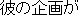
J0
J1
E0 He looked up that character in the dictionary.
J0
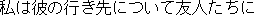
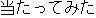
J0
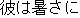
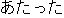
J0
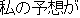
J0
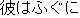
B: Compound Japanese Verbs.
J0
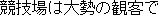
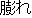
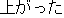
J0
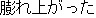
J0
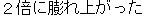
C: -i type Adjectives.
J0
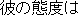
J0
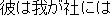
J0
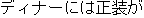
J0
J1
E0 It is best to keep potatoes at room temperature.
E1 Potatoes should be kept at room temperature.
D: -na type Adjectives.
J0
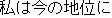
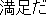
J0
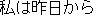
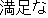
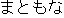
J0
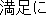

E: Verbs of Chinese Origin.
J0
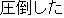
J0
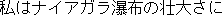
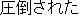
J0
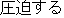